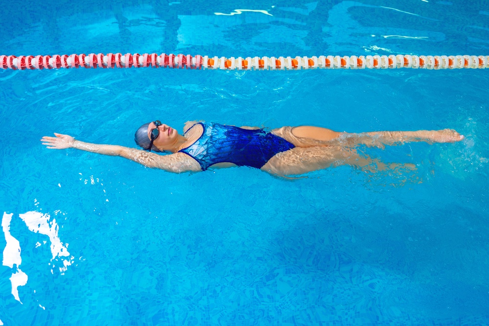
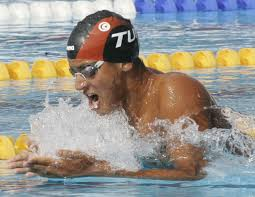
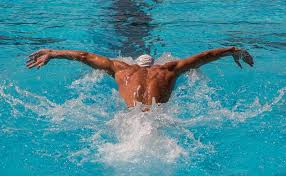

Gyorsuszás
Érdekesség: Bár ma ez a legnépszerűbb technika, a nyugati világban egészen az 1844-es londoni úszóversenyig szinte teljesen ismeretlen volt. Ekkor két észak-amerikai indián úszó ezzel a technikával szó szerint tönkreverte a teljes brit mezőnyt (akik akkoriban csak mellúszást használtak). A brit urak kezdetben "nem túl elegánsnak" és "barbár csapkodásnak" nevezték, de a hihetetlen gyorsasága miatt hamar mindenki átvette.

Melluszás
Érdekesség: Ez a leglassabb úszásnem a négy közül, viszont itt használjuk a legtöbb energiát és izommunkát! Mivel a lábtempó (a békarúgás) és a karok mozgása hatalmas ellenállást fejt ki a vízben, a mellúszás égeti el a legtöbb kalóriát óránként, ha intenzíven csinálják.

Hátuszás
Érdeviesség: Mivel a hátúszók nem látják, mi van előttük, a versenymedencék felett pontosan 5 méterrel a fal előtt egy zásósor lóg a víz felett. Az úszók ebből tudják (a tempóik számolásával), hogy mindjárt elérik a falat, és ideje megfordulni, nehogy beverjék a fejüket.

Pillangó uszás
Érdekesség: A pillangó tulajdonképpen a mellúszásból fejlődött ki az 1930-as években. Néhány úszó rájött, hogy ha a karjait a víz felett hozza előre (nem a víz alatt, mint mellen), akkor sokkal gyorsabb lesz. Mivel a szabályzat ezt akkor még nem tiltotta, "trükközésként" indult, és csak 1952-ben lett hivatalosan is teljesen különálló úszásnem.